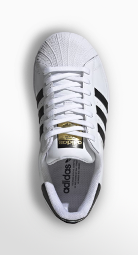

SUPERSTAR
20


From the basketball court to the classroom. Everyone deserves a pair of adidas Superstars Shoes. This kids' version celebrates 50 years of the classic shell-toe design. From the distinctive serrated 3-Stripes to the comfortable rubber cupsole, this anniversary edition honors an icon. Whether they sport all white, all black or something in between, these shoes keep little ones looking fresh .
QUALITY MATERIALS
ICONIC SHOES